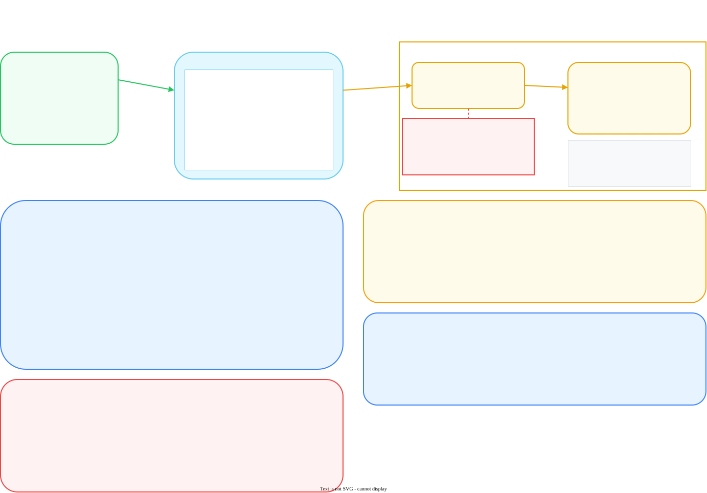

AWS Bedrock Integration
Connecting the gateway to Amazon Bedrock through any of the five modes on the AWS Auth Type control, with the IAM permission policy, the trust policy and its published principal ARN, the credential-free service role path, STS session tags for cost attribution, and a verified first call
What this covers
AWS identity controls access to Amazon Bedrock, so most of the credentials the gateway can hold for it are AWS credentials, and the work splits across two consoles: the AWS console, where an IAM policy and either a role or a key are created, and Strata Cloud Manager, where the integration is created. This page covers the Bedrock tile end to end, one section per authentication mode, through to a model response returned by the gateway.
The Bedrock tile carries a control labeled AWS Auth Type with five modes: AWS Access Key, AWS Assumed Role, AWS Service Role, API Key and OAuth Client Credentials. This page takes them in that order, which is the order the control lists them in. Every mode ends with the same AWS Region field, every mode needs the same Bedrock invoke permissions on whichever AWS identity ends up making the call, and every mode addresses models by the full Bedrock model ID including the cross-region prefix.
The five AWS Auth Type modes and the fields under each one were captured in a live Strata Cloud Manager tenant on 2026-11-17, and the screenshots appear inline in each section below. Where a field label here differs from the product documentation, the label here is the one on the screen. The AWS-side procedure comes from the Portkey assumed-role documentation and from the published model provider prerequisites. The Not yet verified in a tenant section lists what the captures did not settle.
Step 1 of the wizard, with the Bedrock row visible among the provider tiles:
![The Select the LLM Provider step of the Add LLM Integration wizard, showing a searchable table headed Total Available Providers (82). Visible rows include Open AI, Anthropic, Google, Azure OpenAI, Azure Foundry, Bedrock, Bedrock Mantle, Claude Platform on AWS, Vertex AI, X AI and Meta AI. The Bedrock row reads Deploy Scalable, Reliable, and Secure Generative AI Applications Using Amazon Web Services. A four-step rail on the left shows Select A Provider, Integration Details, Workspace Provisioning and Model Provisioning.](../aigw-screenshots/aigw-int-provider-picker.png)
All three reach overlapping models on AWS, and each is configured differently. Bedrock is the native Bedrock runtime and is what this page covers. Bedrock Mantle exposes OpenAI-compatible endpoints on Bedrock, which matters to an application already written against the OpenAI SDK. Claude Platform on AWS reaches Claude through Anthropic-managed infrastructure. Confirm which product the customer bought before picking a tile, because the configuration does not transfer between them.
Configuration chapter 9 owns the provider-agnostic flow: the three tabs on the Integrations page, the slug convention, workspace provisioning, budgets and rate limits, and the model allowlist mechanics. Read it once and do not look for it repeated here. Configuration chapter 3 owns the vault reference that a secret access key can resolve from. The provider integrations hub holds the authentication path matrix for all four providers.

Prerequisites
Collect both lists before the session starts. The AWS list decides which authentication path is even available, and the gateway list decides what the wizard will accept.
| Item | Detail |
|---|---|
| Account ID | The AWS account that holds the Bedrock models. The policy, the role and the key all live in this account. |
| Region | The region where the models are enabled, for example us-east-1. Every authentication path needs it, and a model enabled in one region is not callable in another. |
| Model IDs | The full Bedrock model ID of each model to provision, including the cross-region prefix, for example us.anthropic.claude-3-7-sonnet-20250219-v1:0. |
| Inference profiles, yes or no | Whether any of those models is called through an inference profile. The answer adds one action and two resource ARNs to the permission policy. |
| An IAM administrator | A person who can create a customer managed policy, create a role, and edit a trust policy in that account. |
| External ID, if the customer requires one | A string the customer's security standard mandates for cross-account role assumption. Decide this before the role is created rather than after. |
Every row has a written value. A region named as "wherever Bedrock is" and a model named as "Claude" are both unresolved; the model allowlist later in this page needs the exact string.
| Item | Detail |
|---|---|
| Hosted or self-hosted | This decides two things on this page. The assumed-role trust policy names a different principal for each, and STS session tags need an environment variable on the gateway container, which in practice means self-hosted. |
| Gateway version | Session tags need 2.19.0 or higher. Skip the session-tag step below on anything older. |
| Strata Cloud Manager access | An administrator who can reach AI Security, then AI Gateway, then Integrations, and create an integration at the organization level. |
| A slug | Lowercase, hyphenated, provider and environment, for example bedrock-prod. The slug reaches application code and changing it later means changing every caller. |
| A workspace API key | Needed for the first call at the end of this page, not for creating the integration. |
The hosted or self-hosted answer is confirmed against the deployment rather than assumed, and the slug is written down in a form that can be applied to every other integration the customer will create.
Choose a path
The AWS Auth Type control sits directly below Slug on Integration Details and offers five modes. The table below lists them in the order the control renders them, which is also the order of the sections on this page. Of the four providers this set documents, Bedrock offers the most modes, and each of the other three names its control something else.
| Mode | What AWS issues | What the gateway stores | Rotation and revocation |
|---|---|---|---|
AWS Access Key |
An access key ID and a secret access key on an IAM identity | Both values, encrypted, or a vault reference to the secret access key | Rotation is manual and on your schedule. Revocation means deactivating or deleting the key in IAM. |
AWS Assumed Role |
Nothing. The gateway calls STS and receives temporary credentials. | A role ARN, the region, and an external ID when one is set. No long-lived secret exists. | There is no secret to rotate. Revocation means detaching the policy, editing the trust policy or deleting the role. |
AWS Service Role |
Nothing. The gateway uses the IAM role already attached to the compute it runs on. | The region. The form has no credential field at all in this mode. | There is no secret to rotate. Revocation means detaching the Bedrock policy from the compute role. |
API Key |
An API key from the Bedrock console | The key, encrypted, or a vault reference to it | Rotation is manual. Revocation means deleting the key in the Bedrock console. |
OAuth Client Credentials |
Undocumented. The AWS-side configuration for this mode is not described in any source behind this page. | A token endpoint, a client ID, a client secret, an optional scope, and the region. | Rotation means rotating the client secret at the identity provider. |
AWS Service Role is the strongest mode on a self-hosted gateway, because it stores nothing and rotates nothing, and the gateway has to be running on AWS compute for it to work at all. AWS Assumed Role is the strongest mode on a hosted gateway, because it also stores no long-lived secret and the customer account keeps control of the role. AWS Access Key reaches a working integration fastest and is defensible when the key resolves from a vault and rotates on an enforced schedule. API Key and OAuth Client Credentials are the two least documented modes, and the second of them has no published AWS-side procedure.
The Portkey Workload Identity Federation documentation names OpenAI and Anthropic as the only providers that support federation. The Bedrock tile does carry an OAuth Client Credentials mode, captured in the tenant on 2026-11-17, so the documentation's limit does not hold. What the token endpoint should point at for a Bedrock integration is a separate question, and the OAuth client credentials section states plainly that it is unanswered. Two modes on this tile already avoid a stored long-lived secret without any identity provider, so a customer asking for secret-free Bedrock access has a verified answer today.
AWS Region is the last field on the form in all five modes, and it is a separate value from the credential. It sits on the main form rather than inside a collapsed section, so a region left blank is visible on the page before the form is saved.
AWS access key
This path gives the gateway a long-lived IAM credential. Three steps build it: a permission policy, an identity holding that policy with a key pair issued against it, and the integration itself.
The same policy serves every mode that reaches Bedrock through an AWS identity, so the assumed-role and service-role sections reuse it. Create it once per account.
- In the AWS console open IAM, then Policies, then Create policy.
- Switch the editor to JSON and paste the policy below.
- Name it for its purpose, for example
AIGatewayBedrockInvoke, and create it.
{
"Version": "2012-10-17",
"Statement": [
{
"Sid": "BedrockConsole",
"Effect": "Allow",
"Action": [
"bedrock:InvokeModel",
"bedrock:InvokeModelWithResponseStream"
],
"Resource": "*"
}
]
}Add the statement below only when a provisioned model is called through an inference profile. The gateway resolves the profile to its foundation model before sending the request, which is why the read action is needed.
{
"Sid": "BedrockInferenceProfiles",
"Effect": "Allow",
"Action": "bedrock:GetInferenceProfile",
"Resource": [
"arn:aws:bedrock:*:*:inference-profile/*",
"arn:aws:bedrock:*:*:application-inference-profile/*"
]
}The Portkey assumed-role documentation lists only the two invoke actions. The published model provider prerequisites page also lists bedrock:GetInferenceProfile. Both are right for their own case: the action is needed only when an inference profile is in the call path, and a cross-region model ID such as us.anthropic.claude-3-7-sonnet-20250219-v1:0 is exactly that case. Include the statement unless you have confirmed that no provisioned model uses a profile.
The Resource value of * is what the source policy specifies. Narrowing it to the model ARNs that were provisioned is a reasonable hardening step, and it has to be redone every time a model is added to the allowlist.
The policy appears under Customer managed in the IAM policy list, and its JSON view shows the invoke actions. Nothing is attached to it yet.
Create a dedicated identity for this integration. A shared identity makes the CloudTrail record unreadable and makes revocation an outage for whatever else was using it.
- In IAM, create an identity whose only purpose is this integration, named for it, for example
aigw-bedrock-prod. - Attach the
AIGatewayBedrockInvokepolicy from the previous step and nothing else. - Create an access key on that identity and record the access key ID and the secret access key.
- Record where the rotation of this key is tracked, and the date it is next due.
AWS displays the secret access key at creation time only. Put it straight into the vault that configuration chapter 3 set up rather than into a clipboard, a chat message or a text file.
The identity lists exactly one attached policy and one active access key, and the secret access key is in the vault with a path you can read back.
- In Strata Cloud Manager open AI Security, then AI Gateway, then Integrations, then LLM Integrations, then Add LLM Integration.
- Select Bedrock on Select A Provider and continue to Integration Details.
- Set Name and Slug from the prerequisites, for example
Bedrock Productionandbedrock-prod. - Select
AWS Access Keyon theAWS Auth Typecontrol. - Paste the secret access key into AWS Secret Access Key, the first field below the control.
- Paste the access key ID into AWS Access Key Id.
- Enter the region into AWS Region, for example
us-east-1. - Continue to Workspace Provisioning and follow Provision the integration and set the model allowlist.
Your screen should look like this:
![Step 2 Integration Details of the Add LLM Integration wizard for the Bedrock provider, whose header reads Deploy Scalable, Reliable, and Secure Generative AI Applications Using Amazon Web Services. Above the authentication control are Name marked required, Short Description (Optional) and Slug, each with the placeholder Enter. A control labeled AWS Auth Type renders five radio cards on two rows: AWS Access Key, AWS Assumed Role and AWS Service Role on the first row, API Key and OAuth Client Credentials on the second. AWS Access Key is selected. Below it are three empty fields in order, AWS Secret Access Key, AWS Access Key Id and AWS Region, then a collapsed Advanced Options section and a Pricing Adjustments toggle switched off.](../aigw-screenshots/aigw-int-bedrock-auth-access-key.png)
The form asks for AWS Secret Access Key first and AWS Access Key Id second, which is the reverse of the order the AWS console presents them in and the reverse of the order most runbooks record them in. Read the labels rather than filling the fields top to bottom from a copied pair.
Chapter 3 documents a Secret Ref toggle on provider-specific credential fields, including an AWS secret access key. No toggle is visible beside AWS Secret Access Key in the capture above. Check the field on your own tenant before telling a customer that the AWS secret can resolve from the vault the way an OpenAI key does.
The integration saves and appears on the Connected tab under the name you gave it. Saving proves the form accepted the values; it does not prove AWS accepts them, which the first call at the end of this page is what finally tests.
AWS assumed role
On this path the gateway holds no AWS secret. It calls STS with its own principal, assumes a role in the customer account, and receives temporary credentials for each request. The customer account keeps control of the role, so revoking access is an edit in IAM rather than a key deletion coordinated with the gateway.
Four steps build it, and a fifth adds cost attribution. The permission policy is the same one as the access key path, so an account that already has AIGatewayBedrockInvoke starts at B.2.
This is the same policy as A.1, reproduced here so this path can be followed on its own.
- In the AWS console open IAM, then Policies, then Create policy.
- Switch the editor to JSON and paste the policy below.
- Name it
AIGatewayBedrockInvokeand create it.
{
"Version": "2012-10-17",
"Statement": [
{
"Sid": "BedrockConsole",
"Effect": "Allow",
"Action": [
"bedrock:InvokeModel",
"bedrock:InvokeModelWithResponseStream"
],
"Resource": "*"
}
]
}Add bedrock:GetInferenceProfile on arn:aws:bedrock:*:*:inference-profile/* and arn:aws:bedrock:*:*:application-inference-profile/* when a provisioned model is called through an inference profile. A.1 above carries that statement and the reason for it.
The policy exists under Customer managed and its JSON view shows the invoke actions.
The role is created with a placeholder trust relationship in this step and given its real one in B.3. The console asks for the trusted entity before it will create anything, so this order is forced by the console rather than chosen.
- In IAM open Roles, then Create role.
- Set the trusted entity type to AWS account.
- If the customer's standard requires an external ID, set one now and copy the value. It is needed again in B.3 and in B.4.
- Attach the
AIGatewayBedrockInvokepolicy. - Name the role for the integration, for example
aigw-bedrock-prod, and create it. - Copy the role ARN from the role summary.
The external ID is a shared string that the caller has to present alongside the assume-role request, and it guards against a confused-deputy case where another tenant of the same gateway knows your role ARN. Setting one costs one field in the integration. Adding one after the integration is live means editing the trust policy and the integration together, and calls fail in the window between the two edits.
The role exists, the Permissions tab lists AIGatewayBedrockInvoke, and the role ARN is recorded. The external ID, if one was set, is recorded alongside it.
The trust policy names the principal allowed to assume the role. That principal is the gateway, and which gateway decides the ARN.
| Deployment | Principal to trust |
|---|---|
| Hosted gateway | arn:aws:iam::299329113195:role/portkey-app, published by the vendor and the same for every customer of the hosted application. |
| Self-hosted Enterprise gateway | A different principal, documented in the Portkey helm repository at charts/portkey-gateway/docs/Bedrock.md. On a self-hosted gateway running in EKS this is the role the pods assume through their service account. |
- Open the role, then the Trust relationships tab, then Edit trust policy.
- Replace the document with the block below, using the principal for your deployment.
- Save the policy.
{
"Version": "2012-10-17",
"Statement": [
{
"Effect": "Allow",
"Principal": {
"AWS": "arn:aws:iam::299329113195:role/portkey-app"
},
"Action": "sts:AssumeRole",
"Condition": {}
}
]
}With an external ID, replace the empty Condition with this one:
"Condition": {
"StringEquals": {
"sts:ExternalId": "<your external ID>"
}
}The published model provider prerequisites page states that the hosted gateway's principal belongs to Palo Alto Networks, that the guide does not have it, and that a hosted gateway therefore needs an access key or a Bedrock API key. That position is out of date. The principal is published as arn:aws:iam::299329113195:role/portkey-app, it is the vendor's account rather than the customer's, and the assumed-role path is available to a hosted gateway. Use this page for the assumed-role decision. The account number above is a published vendor value and is correct to copy verbatim.
The Trust relationships tab shows one statement, allowing sts:AssumeRole for the principal that matches your deployment. The external ID appears in a StringEquals condition when one was set, and the condition is absent when one was not.
- In Strata Cloud Manager open AI Security, then AI Gateway, then Integrations, then LLM Integrations, then Add LLM Integration.
- Select Bedrock and continue to Integration Details.
- Set Name and Slug, for example
Bedrock Productionandbedrock-prod. - Select
AWS Assumed Roleon theAWS Auth Typecontrol. - Paste the role ARN from B.2 into AWS Role ARN.
- Paste the external ID from B.2 into AWS External Id (optional). Leave the field empty when the trust policy has no external ID condition.
- Enter the region into AWS Region.
- Continue to Workspace Provisioning and follow Provision the integration and set the model allowlist.
Your screen should look like this:
![Step 2 Integration Details of the Add LLM Integration wizard for the Bedrock provider, with the AWS Auth Type control showing five radio cards and AWS Assumed Role selected. Three empty fields follow in order: AWS Role ARN with the placeholder Enter AWS Role ARN, AWS External Id (optional) with the placeholder Enter AWS External Id, and AWS Region with the placeholder Enter AWS Region. Below them sit a collapsed Advanced Options section and a Pricing Adjustments toggle switched off. No access key or secret field appears anywhere on the form.](../aigw-screenshots/aigw-int-bedrock-auth-assumed-role.png)
An external ID present in the trust policy and absent from the integration fails, and so does the reverse. The string is compared exactly, so a trailing space pasted from a ticket breaks it in a way that reads like a permissions problem.
The integration saves and appears on the Connected tab. The role ARN in the integration is character for character the one on the IAM role summary page.
One role shared by several applications produces one undifferentiated Bedrock bill and one undifferentiated CloudTrail record. Session tags fix that without a role per application: the gateway forwards request metadata to AWS as STS session tags, and the spend separates in Cost Explorer and in CloudTrail by application, team or environment.
| Requirement | Detail |
|---|---|
| Gateway version | 2.19.0 or higher. |
| Environment variable | AWS_BEDROCK_STS_SESSION_TAGS_ENABLED set to true on the gateway container. |
| Caller principal IAM policy | Must allow sts:TagSession. |
| Target role trust policy | Must also allow sts:TagSession, alongside sts:AssumeRole. |
Setting an environment variable on the gateway container requires control of the container. A hosted gateway does not give the customer that control, and the caller-principal half of the sts:TagSession requirement lands on the vendor's principal rather than on anything the customer can edit. Confirm the deployment is self-hosted before promising session tags to a customer, because the promise is not recoverable from the AWS side alone.
- Confirm the gateway version is
2.19.0or higher. - Set
AWS_BEDROCK_STS_SESSION_TAGS_ENABLEDtotrueon the gateway container and restart it. - Add
sts:TagSessionto the IAM policy of the principal that assumes the role. - Add
sts:TagSessionto the trust policy of the role from B.2, as shown below. - Send a request carrying metadata and confirm the tags arrive.
The trust policy with both actions:
{
"Version": "2012-10-17",
"Statement": [
{
"Effect": "Allow",
"Principal": {
"AWS": "arn:aws:iam::299329113195:role/portkey-app"
},
"Action": [
"sts:AssumeRole",
"sts:TagSession"
],
"Condition": {}
}
]
}The source documentation states the sts:TagSession requirement for both policies rather than printing a combined document. The block above is that requirement written out against the B.3 trust policy, so compare it against your own role before saving.
Any metadata on a request is forwarded as session tags. Pass it in the metadata field of the request body or in the x-portkey-metadata header:
curl '<GATEWAY_BASE_URL>/v1/chat/completions' \
-H "Content-Type: application/json" \
-H "x-portkey-api-key: $PORTKEY_API_KEY" \
-H "x-portkey-provider: $PROVIDER_SLUG" \
-H 'x-portkey-metadata: {"app": "chatbot", "team": "platform", "env": "prod"}' \
-d '{
"model": "anthropic.claude-sonnet-4-20250514-v1:0",
"messages": [{"role": "user", "content": "Hello"}]
}'The tag keys come from whatever metadata the caller sends, so three teams sending app, application and service produce three cost dimensions that do not add up. Publish the key list with the slug, and activate the keys as cost allocation tags in the AWS billing console so they appear in Cost Explorer.
A CloudTrail AssumeRole event for the role carries the tag keys and values that the request sent. A request sent without metadata still succeeds, which confirms that tagging is additive rather than mandatory.
AWS service role
Selecting AWS Service Role leaves one field on the form, and that field is AWS Region. The tile asks for no key, no secret, no role ARN and no external ID. The gateway authenticates to Bedrock as whatever IAM role the compute it runs on already carries: an EC2 instance profile, an ECS task role, or an EKS pod identity or IRSA service-account role. The AWS SDK inside the gateway picks that role up from the instance metadata service or the container credential endpoint without being told to.
This is the AWS counterpart of the Azure Managed mode, and it is the strongest Bedrock path available on a self-hosted gateway. Nothing is stored in the integration, so nothing can leak from it, and nothing has to rotate. All of the access control lives on the compute role in the customer's own account.
This mode binds to the identity of the machine the gateway runs on. On a hosted gateway that machine belongs to the vendor and its role lives in the vendor's AWS account, so there is no role in the customer account for the customer to grant Bedrock on. Confirm the deployment is self-hosted on AWS before selecting this mode. A hosted gateway uses AWS assumed role instead, which reaches the same outcome of storing no long-lived secret.
Two steps build it. The permission policy is the same AIGatewayBedrockInvoke policy that A.1 creates, including the conditional inference-profile statement, so an account that already has it starts by attaching it rather than writing it again.
Find the role the gateway process already runs under, then add Bedrock to it. A new role created here reaches nothing, because the gateway inherits whichever role its compute is already configured with and has no field in which to name a different one.
| Where the gateway runs | The role to attach the policy to |
|---|---|
| EC2 | The role inside the instance profile attached to the instance, shown on the instance summary under IAM Role. |
| ECS or Fargate | The task role in the task definition, which is a different role from the task execution role. The execution role pulls the image and writes logs; only the task role reaches Bedrock. |
| EKS | The role mapped to the gateway pod's service account, through either EKS Pod Identity or an IRSA trust policy. |
- Identify the role from the table above and record its ARN.
- Create the
AIGatewayBedrockInvokepolicy if the account does not already have it. A.1 carries the JSON and the conditional inference-profile statement. - In IAM open Roles, open that role, and attach
AIGatewayBedrockInvokeunder Permissions. - Confirm the models recorded in the prerequisites are enabled in the account and region this role will call, because a Bedrock model enabled in one region is not callable from another.
Every process on that instance, task or pod inherits the role, so anything running beside the gateway can now call Bedrock and the charge lands on the customer's account. Run the gateway on compute dedicated to it, or record the shared access as an accepted risk. An EKS deployment avoids the question, because a role bound to the gateway's service account reaches only the gateway's own pods.
The Permissions tab of the compute role lists AIGatewayBedrockInvoke. Running aws sts get-caller-identity from inside the gateway's own instance, task or pod returns that same role ARN, which proves the gateway's SDK will resolve to it.
The gateway side of this mode is one field.
- In Strata Cloud Manager open AI Security, then AI Gateway, then Integrations, then LLM Integrations, then Add LLM Integration.
- Select Bedrock and continue to Integration Details.
- Set Name and Slug, for example
Bedrock Productionandbedrock-prod. - Select
AWS Service Roleon theAWS Auth Typecontrol. - Enter the region into AWS Region, which is now the only field below the control.
- Continue to Workspace Provisioning and follow Provision the integration and set the model allowlist.
Your screen should look like this:

In the other modes the form at least holds a credential that can be checked by eye. Here the form holds a region and a name, so it saves whether or not the compute role exists, whether or not the policy is attached, and whether or not the gateway is running on AWS at all. The first call at the end of this page is the only test of this mode.
The integration saves and appears on the Connected tab. Reopening it shows AWS Service Role still selected and the region populated, with no credential field present.
Bedrock API key
The mode is labeled API Key on the control, and the field below it is labeled API Key as well. Bedrock issues its own API key, which the gateway stores like any other provider key. This mode reaches a working integration with no IAM role and no key pair, and it stores a long-lived secret to do so.
The sources behind this page describe this mode in a single line: an API key from the Bedrock console, plus the region. The console navigation to generate the key, the key's expiry behavior, and the identity the key maps to are all unconfirmed here. Read the AWS Bedrock documentation for the key itself, and treat the two steps below as the gateway side only.
- In the AWS console open Amazon Bedrock in the region recorded in the prerequisites.
- Generate an API key for this integration and copy the value.
- Store the value in the vault from configuration chapter 3.
- Record the expiry, if the key has one, and where its rotation is tracked.
The identity behind the key still needs bedrock:InvokeModel and bedrock:InvokeModelWithResponseStream, and bedrock:GetInferenceProfile when an inference profile is in the call path. The policy in A.1 is that permission set.
The key is in the vault and the region it belongs to is recorded next to it. A Bedrock API key generated in one region does not serve another.
- In Strata Cloud Manager open AI Security, then AI Gateway, then Integrations, then LLM Integrations, then Add LLM Integration.
- Select Bedrock and continue to Integration Details.
- Set Name and Slug, for example
Bedrock Productionandbedrock-prod. - Select
API Keyon theAWS Auth Typecontrol. - Supply the key from D.1 in the API Key field, using the vault reference in place of the value where the field offers one.
- Enter the region into AWS Region.
- Continue to Workspace Provisioning and follow Provision the integration and set the model allowlist.
Your screen should look like this:
![Step 2 Integration Details of the Add LLM Integration wizard for the Bedrock provider, with the AWS Auth Type control showing five radio cards and API Key selected on the second row. Two empty fields follow, API Key with the placeholder Enter API Key and AWS Region with the placeholder Enter AWS Region. The API Key label carries no Grab API Key link, unlike the equivalent field on the OpenAI tile. Below the fields sit a collapsed Advanced Options section and a Pricing Adjustments toggle switched off.](../aigw-screenshots/aigw-int-bedrock-auth-api-key.png)
The integration saves and appears on the Connected tab, with API Key still selected and the region populated when the integration is reopened.
OAuth client credentials
The fifth card on the AWS Auth Type control is OAuth Client Credentials. Selecting it replaces the AWS credential fields with the same four OAuth fields that the OpenAI tile shows on its own OAuth path, followed by AWS Region. The gateway therefore requests a token from an identity provider the customer names, rather than holding an AWS credential.
The fields are verified and the screenshot below shows them. What is not verified is what the token endpoint should point at for a Bedrock integration, and no source behind this page describes an AWS-side procedure for this mode. The Portkey federation documentation covers OpenAI and Anthropic only, and names no AWS equivalent. Nothing on this page tells you which identity provider to register, which AWS resource to register it against, or what AWS does with the resulting token. Treat the four field descriptions below as an inventory of the form rather than as a procedure, and do not quote this mode to a customer as a supported design until the AWS side is confirmed with the vendor.
| Field | Placeholder on the form | What it takes |
|---|---|---|
Token Endpoint | https://auth.example.com/oauth2/token | The identity provider endpoint the gateway posts a client_credentials request to. Which endpoint serves a Bedrock integration is the open question above. |
Client ID | Enter Client ID | The client identifier the identity provider issued to the gateway. |
Client Secret | Enter Client Secret | The secret paired with that client identifier. This is a long-lived secret, so this mode does store one. |
Scope (optional) | e.g. api/read api/write | Sent as the scope form parameter. The generic placeholder matches the OpenAI tile's plain OAuth path rather than its federation path. |
This step exists to document the mode accurately rather than to deploy it. Walk the form far enough to see the fields, then stop, because completing it needs an AWS-side answer this guide does not have.
- In Strata Cloud Manager open AI Security, then AI Gateway, then Integrations, then LLM Integrations, then Add LLM Integration.
- Select Bedrock and continue to Integration Details.
- Select
OAuth Client Credentialson theAWS Auth Typecontrol. - Compare the fields on screen against the table above and record any difference, because a difference means the tile changed after 2026-11-17.
- Leave the wizard without saving, and raise the AWS-side question with the vendor before any customer design depends on this mode.
Your screen should look like this:
![Step 2 Integration Details of the Add LLM Integration wizard for the Bedrock provider, with the AWS Auth Type control showing five radio cards and OAuth Client Credentials selected on the second row. Five empty fields follow in order: Token Endpoint prefilled with the placeholder https://auth.example.com/oauth2/token, Client ID, Client Secret, Scope (optional) with the placeholder e.g. api/read api/write, and AWS Region. A collapsed Advanced Options section sits below them. No AWS role ARN, access key or secret access key field appears in this mode.](../aigw-screenshots/aigw-int-bedrock-auth-oauth.png)
A customer asking for Bedrock access without a stored AWS key has two answers that are verified end to end on this page. A self-hosted gateway on AWS compute uses AWS service role and stores nothing at all. A hosted gateway uses AWS assumed role and stores only a role ARN. Both reach what this mode appears to promise, and both have a published AWS-side procedure.
The five fields on screen match the table above in both their labels and their order, and the wizard was left without a saved integration. The AWS-side question is written into the engagement notes with the vendor named as its owner.
Provision the integration and set the model allowlist
Steps 3 and 4 of the wizard are the same for every provider, and configuration chapter 9 owns them: which workspaces receive the integration, the budget and rate limits attached to each, and the choice between allowing all models and building an allowlist. One part of step 4 is specific to Bedrock, and it is the part that breaks the first call.
Bedrock models are addressed by their full model ID rather than by a friendly name, and a cross-region inference profile carries a region prefix on the front of that ID. The allowlist entry and the model reference in application code both use the full string.
| Where | Value |
|---|---|
| Model allowlist entry | us.anthropic.claude-3-7-sonnet-20250219-v1:0 |
| Model reference from an application | @default-bedrock/us.anthropic.claude-3-7-sonnet-20250219-v1:0 |
| Model reference with your own slug | @<slug>/<full-bedrock-model-id> |
- On Model Provisioning, choose Allow Specific Models rather than Allow All Models.
- Add each model ID from the prerequisites, including the cross-region prefix where the model uses one.
- Confirm that every model ID added here is enabled in the region supplied with the credential.
The ID anthropic.claude-3-7-sonnet-20250219-v1:0 and the ID us.anthropic.claude-3-7-sonnet-20250219-v1:0 are different strings, and only one of them matches what the account has enabled. The failure reads as a model not found rather than as a prefix problem, which sends people back to the credential instead of to this field.
The allowlist count matches the number of models that were approved, and each entry matches the model ID recorded in the prerequisites character for character.
Step 4 of the wizard decides which models this integration exposes. The header reads Select Models to Provision, and the count beside Models is everything Bedrock publishes through the gateway. A tenant capture showed 389. Workspaces see only what is enabled here, so this list is the allowlist.
- Use Search... to find each approved model by name.
- Set the toggle on each model card to on. The toggle sits in the top right of the card.
- Leave every other model off.
Select All and Deselect All sit above the list. On a list of several hundred models, start from Deselect All and add what was approved, rather than starting from everything and removing what was not.
Nothing in this list distinguishes a model that costs cents from one that costs dollars for the same prompt. Budgets and rate limits are set per workspace in step 3, so they cap spend without capping which model spends it. The allowlist is the only control that decides that, and it is set here and nowhere else.
Every approved model shows an enabled toggle, and the count of enabled models matches the list the customer approved.
Below the model list is a toggle reading Automatically enable new models from this provider, described as making new models from the provider available on this integration. It is off by default.
Leaving it off means a model released next month is unavailable until someone enables it. Turning it on means that model is callable the day it ships, under the budgets already in place, with no review.
An organization that approves models through a review process wants this off, because the toggle quietly bypasses that process. A team that wants the newest model the day it lands wants it on. Record which was chosen and why, because the setting is invisible until an unexpected model appears in the logs.
The toggle reflects a decision somebody made, rather than the default nobody looked at.
Each model card carries a Set Pricing button. It opens a drawer titled Update Base Model on the right of the page.
The drawer opens with Add custom pricing for this model? switched off, explained as using default public model pricing from the base model when nothing is specified, with fine tuned models using public fine tuned model pricing. Leave it off and the gateway costs the model at the published public rate.
Switch it on and the drawer accepts:
| Field | What it takes |
|---|---|
| Input Cost | The rate charged for input tokens. |
| Output Cost | The rate charged for output tokens. |
| Cache Pricing | A JSON object with a price under cache_write_input_token and under cache_read_input_token. The field is prefilled with an example showing 3.75 and 0.3. |
| Pricing Adjustments | A separate toggle, off by default, alongside the cost fields. |
| Custom Host (Optional) | An endpoint to route this model to, instead of the provider default. The placeholder reads https://your-custom-endpoint.com. |
| Custom Headers (Optional) | Header and value pairs, added with + Add Header and removed with the bin icon beside each row. |
Close the drawer with Apply, or with Cancel to discard it.
These figures drive what the gateway reports in analytics and what it counts against a budget. The provider still bills its own rate. Entering a negotiated rate here makes internal reporting match the contract; entering a wrong number makes every budget and every cost report wrong in the same direction, and nothing in the console flags the discrepancy.
Both sit on the individual model rather than the integration, so two models under one integration can route to different upstreams and send different headers. A model-level header overrides an integration-level header of the same name.
Each model that needed a negotiated rate shows custom pricing applied, and every model left alone still reports the public rate. A later test call produces a cost figure consistent with the rate entered here.
Step 4 with the Update Base Model drawer open on one model:
![The Model Provisioning step of the Add LLM Integration wizard. The left pane is headed Select Models to Provision and shows a searchable list headed Models (389), with Select All and Deselect All links above cards for individual models, each card carrying a Set Pricing button and an enable toggle. Below the list a toggle reads Automatically enable new models from this provider, switched off. A drawer on the right titled Update Base Model shows an Add custom pricing for this model question switched off, then Input Cost, Output Cost, a Cache Pricing JSON box containing cache_write_input_token and cache_read_input_token prices, a Pricing Adjustments toggle, a Custom Host field and a Custom Headers field with an Add Header link. Cancel and Apply buttons sit at the bottom, and a Create Integration button sits at the bottom of the page behind the drawer.](../aigw-screenshots/aigw-int-model-provisioning-pricing.png)
- Click Create Integration at the bottom of the page.
This is the first point at which the gateway stores anything. Everything before it was a form.
The integration appears on the Connected tab of the Integrations page, carrying the name and slug you set in step 2. Saving proves the form was accepted. It does not prove the credential works, which is what the first model call tests.
Make the first model call
Nothing so far has been tested. One request exercises the credential, the region, the allowlist, the workspace provisioning and the model ID together. Run it before handing anything to an application team.
Replace <GATEWAY_BASE_URL> with the scheme, host and port of the gateway, for example https://gateway.internal.example.com. PORTKEY_API_KEY is a workspace API key, and the application sends no AWS credential of any kind: the gateway holds it. Export the key first so it stays out of shell history.
read -s PORTKEY_API_KEY
export PORTKEY_API_KEY
curl '<GATEWAY_BASE_URL>/v1/chat/completions' \
-H "Content-Type: application/json" \
-H "Authorization: Bearer $PORTKEY_API_KEY" \
-d '{
"model": "@default-bedrock/us.anthropic.claude-3-7-sonnet-20250219-v1:0",
"messages": [{"role": "user", "content": "Reply with the single word ready."}]
}'A client that cannot put the slug in the model field sends a bare model ID and adds the header x-portkey-provider: @<slug> instead. The client applications page lists which tools need it.
A model response comes back through the gateway, and the request appears under AI Security, then AI Gateway, then Observability, on the Logs tab, attributed to the Bedrock integration. An error instead means the troubleshooting table, which reads each failure back to the step that caused it.
The curl proves the gateway works. This proves an application needs only the three values that the model provider prerequisites page names: the base URL, the gateway key and the model reference. No AWS SDK, no boto3, and no AWS credential chain appears in the client.
import os
from openai import OpenAI
client = OpenAI(
base_url="<GATEWAY_BASE_URL>/v1",
api_key=os.environ["PORTKEY_API_KEY"],
)
response = client.chat.completions.create(
model="@default-bedrock/us.anthropic.claude-3-7-sonnet-20250219-v1:0",
messages=[{"role": "user", "content": "Reply with the single word ready."}],
)
print(response.choices[0].message.content)A caller that sends a Bedrock native request through boto3 is not reachable by changing three values, because the gateway accepts the OpenAI protocol and the Anthropic protocol rather than the Bedrock native one. That application either moves to one of those two protocols or looks at the Bedrock Mantle tile, which exposes OpenAI-compatible endpoints on Bedrock. Raise this early, because it is a development task rather than a configuration change.
The script prints the model's reply, and a second entry appears on the Logs tab for the same integration.
Troubleshooting
Each row reads a symptom back to the step that produced it. The error text the gateway returns for these cases has not been captured, so the symptoms below are described by behavior rather than by a quoted string.
| Symptom | Likely cause | Where to fix it |
|---|---|---|
| The integration saves, and the first call returns an AWS access-denied error | The identity has no Bedrock invoke permission, or the policy was created and never attached | A.1 and A.2, B.1 and B.2, or C.1. Check the Permissions tab of the role or identity rather than the policy list. |
| The call fails and the error names the role rather than the model | The trust policy does not permit the gateway principal, or the external ID does not match on both sides | B.3 and B.4. Compare the principal against the hosted or self-hosted row, and compare the external ID string exactly. |
| The service role mode saves and the first call fails as though no credential was supplied | The gateway is not running on AWS compute, its role carries no Bedrock permission, or it resolved a different role from the one the policy was attached to | C.1. Run aws sts get-caller-identity from inside the gateway's own instance, task or pod and compare the returned ARN against the role that holds AIGatewayBedrockInvoke. On ECS, confirm the policy went to the task role rather than the task execution role. |
| The model is reported as not found or not permitted | The model ID is missing its cross-region prefix, is not on the allowlist, or the integration is not provisioned to the calling workspace | F.1 for the ID and the allowlist, configuration chapter 9 for workspace provisioning. |
| The model exists in the account but the call fails for that model only | The model is enabled in a different region from the one supplied with the credential, or it resolves through an inference profile and bedrock:GetInferenceProfile is absent |
The AWS Region value in A.3, B.4, C.2 or D.2, and the conditional statement in A.1. |
| The gateway reports that it cannot read the credential | The secret reference path or the vault permission is wrong | Configuration chapter 3. This is the chapter 3 check reporting for the first time. |
| Calls succeed and CloudTrail shows no session tags | The gateway is below 2.19.0, the environment variable is unset, or sts:TagSession is missing from one of the two policies |
B.5. Check both policies, because the requirement applies to the caller principal and the target role. |
| Cost in Cost Explorer does not break down by application | The tag keys are not activated as cost allocation tags, or callers are sending inconsistent keys | B.5 and the AWS billing console. |
An application using boto3 cannot reach the gateway at all |
The application sends a Bedrock native request, which the gateway does not accept | G.2. The application moves to the OpenAI or Anthropic protocol, or the engagement evaluates the Bedrock Mantle tile. |
Not yet verified in a tenant
All five AWS Auth Type modes were captured on the Bedrock tile in a live tenant on 2026-11-17, so the control, the mode labels, the field labels, the field order and the position of AWS Region are settled and are no longer listed here. The items below are what the captures did not reach. Each one is a question to answer with the tenant open rather than a gap to fill with a guess. Record the answers and send them to whoever maintains this page.
- The contents of Advanced Options — the section is present on all five Bedrock modes and was never expanded, for Bedrock or for any other provider. It is the only collapsed section on the tile, so anything the form accepts that is not listed on this page is inside it.
- The AWS side of the OAuth client credentials mode — which identity provider to register, what the token endpoint should point at, and what AWS accepts the resulting token for. No source behind this page describes any of it, and the OAuth client credentials section stops at the form for that reason.
- Whether an Optional Fields section exists on this tile — it does not appear in any of the five captures. The OpenAI tile has one and the Azure OpenAI tile does not, so its absence here is consistent with the pattern rather than with a missed scroll, and the Bedrock region living on the main form removes the reason it would be needed. Confirm on the tenant before recording the absence as permanent.
- Secret Ref did not appear on any credential field — a Secret References tab does exist, alongside LLM Integrations and MCP Registry under Integrations, so the capability is present on the tenant. No Secret Ref control appeared on any captured credential form. The tenant had no references created, so the control may only render once one exists. Create a reference first, then re-open a credential field.
- The Bedrock API key console path — how the key is generated, whether it expires, and which identity it maps to.
- The self-hosted principal ARN — the value in the Portkey helm repository at
charts/portkey-gateway/docs/Bedrock.mdhas not been read into this page. It matters only to the assumed-role mode, because the service role mode needs no principal at all. - Whether the service role mode reads a region from the instance —
AWS Regionis required on the form, so the question is whether a region set there overrides the compute's own region or is the only region the integration will ever use. - The Endpoint Type field — documented as Public or Private, and not visible in any captured Bedrock screen.
- The gateway's error text — the troubleshooting table describes behavior because no Bedrock failure has been captured with its message.